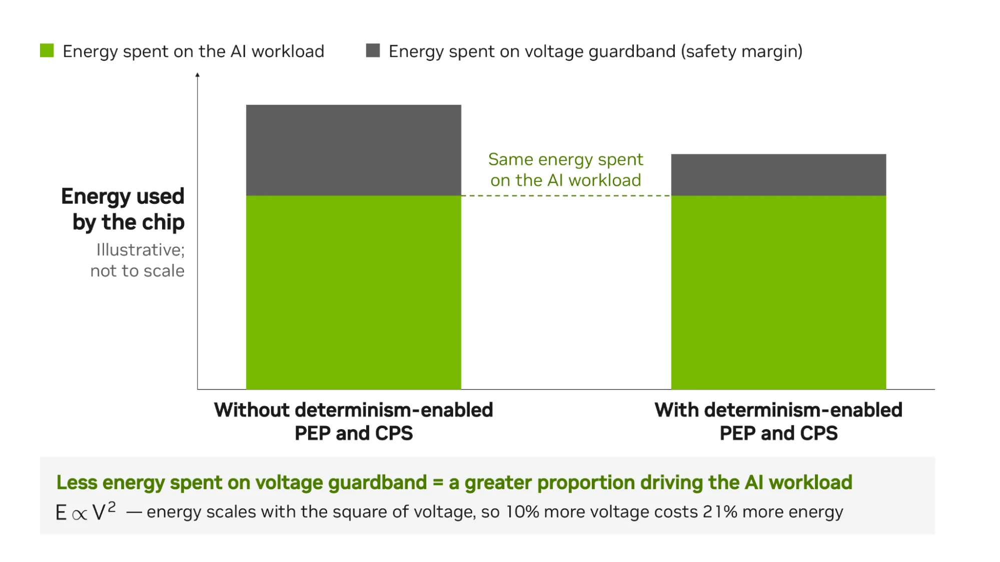
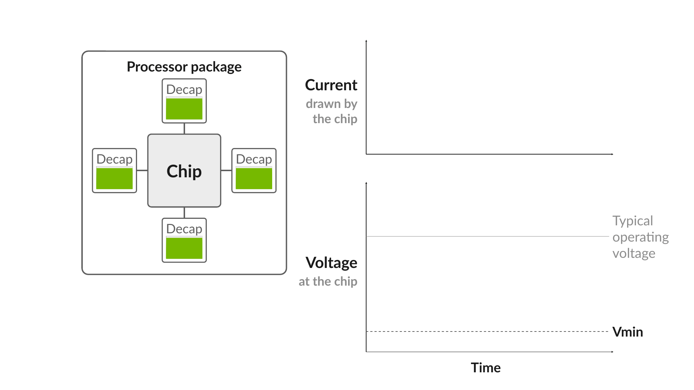
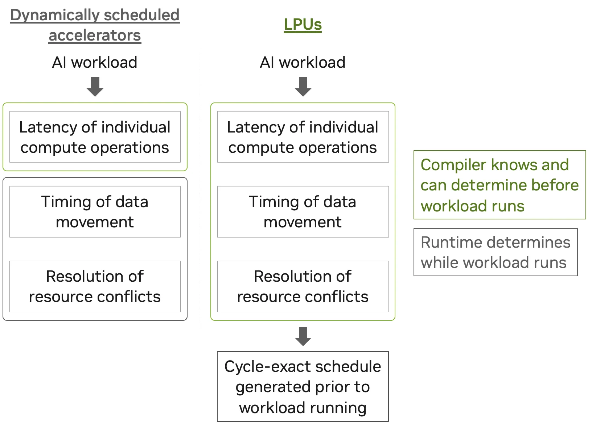
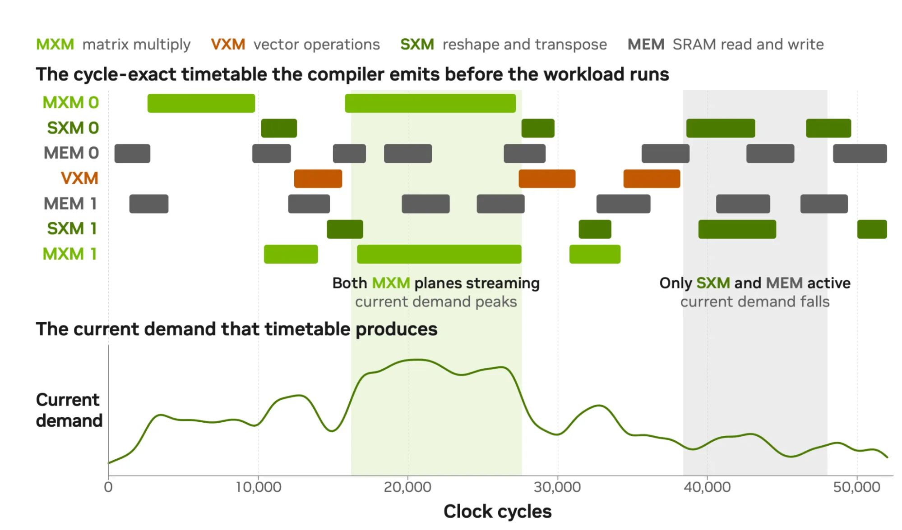
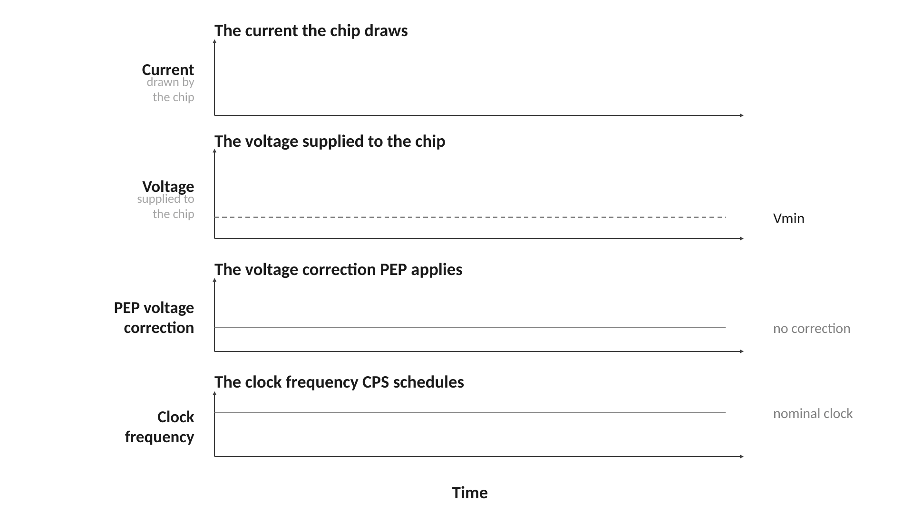
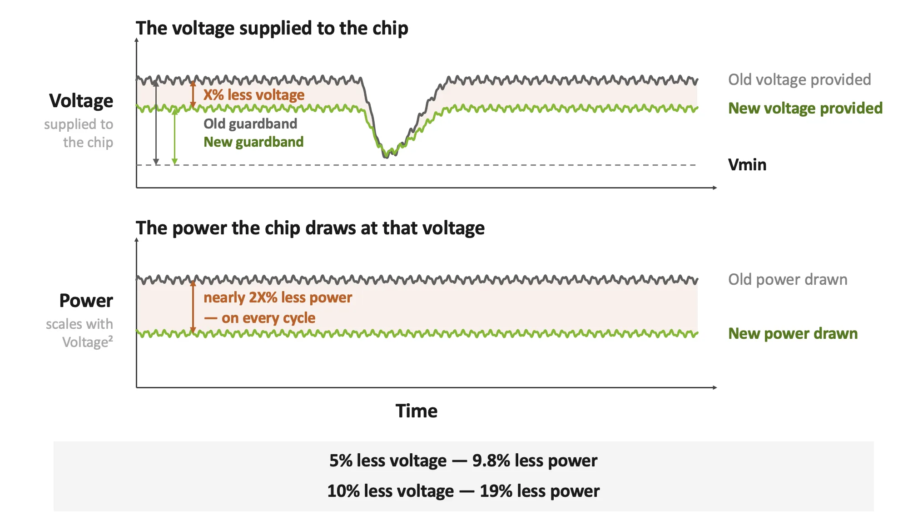

AI工厂的终极约束是电力。NVIDIA把Groq 3 LPX的确定性执行搬上Vera Rubin平台，用周期精确的供电调度把电压保护带压到最小，每瓦特榨出更多token。下文拆解这套机制。
电力是AI工厂的决定性约束。随着AI负载要求一整套计算平台来承托，平台每个组件都必须在工厂有限的电力预算内最大化产出。于是每瓦性能而非原始吞吐，成为衡量AI平台价值的终极标尺。
NVIDIA Vera Rubin平台为规模化高能效AI而设计。核心是NVIDIA Vera Rubin NVL72，从吞吐优化的大批量到高交互层级的小批量，无论开放还是闭源模型，都交出强劲的每瓦性能。
工厂级与机柜级的电源管理创新撑起Vera Rubin在这一指标上的表现。工厂级，NVIDIA DSX MaxLPS软件随负载变化在机柜间调配电力，回收被困电力，在同一站点电力包络内容纳多达40% 的GPU，token吞吐提升35%。
每台Vera Rubin NVL72内部，机柜级电容配合电量感知的智能功率平滑软件，吸收训练与推理负载的突发功率尖峰，让工厂按持续需求而非最坏峰值规划，单位兆瓦部署更多算力。
最高交互层级带来独特挑战。平台为此加入NVIDIA Groq 3 LPX作为低延迟加速器。下文拆解单个LPX机柜内的创新，解释LPX如何成为Vera Rubin平台的高能效一环，包括确定性执行模型。
Groq 3 LPX的确定性执行模型，让LPU编译器能排出精确到时钟周期的调度：每份数据何时送到哪个计算单元、操作何时执行，全部事先定好。这套确定性覆盖机柜内全部256颗LPU芯片，支撑长上下文下的极速交互，也让借力确定性的电源管理技术成为可能。
LPU编译器生成负载执行调度后，能预测该调度中每个周期的电流消耗，进而解锁两项互补技术：
预备供电：在需求变化到来前，先让供电系统做好准备。
时钟周期合成：整形需求升降的陡峭程度。
PEP与CPS联手压低电压保护带，也就是任何芯片组都必须持续预留的电气安全裕量，并不直接驱动AI负载。保护带越小，稀缺电力中花在负载上的比例越高。

跑AI负载时，芯片执行一连串指令，从简单的数据变形到高功耗的矩阵乘法。几乎所有芯片都有硬件特性，能在负载运行时随资源就绪在诸多操作间动态切换。这种灵活性意味着计算密集型操作可能在任何时刻被排上执行，供电系统必须扛住。
驱动AI负载的矩阵乘法与向量乘法，在极短时间内翻转大量晶体管，纳秒级推高芯片电流需求。芯片就近从去耦电容取这部分额外电流，去耦电容是贴在芯片旁边的电容，放电导致芯片电压下降。
芯片板上有稳压器，专职把芯片供电电压钉在目标值，但电感会抵抗电流的快速爬升，稳压器无法瞬时响应。不过稳压器供给的电流最终会追上芯片需求，电压随之恢复。
这种由电流需求剧变驱动的短暂电压跌落叫电压跌落。幅度取决于电流变化量与di/dt即电流变化率。其他条件相同，di/dt越大跌落越深；同样的电流变化摊到更长时间，di/dt更小，跌落更浅。跌落通常不是问题，但所有芯片都有最低电压Vmin，低于Vmin芯片无法正常工作，结果出错。

为躲开最坏情况，芯片带着电压保护带运行，预留足够电压裕量，让芯片在瞬态与最坏条件下仍拿到最低电压。多数时间里，撑起保护带的电力实际是浪费的。更糟的是功率与电压平方成正比，持续多供10% 电压意味着多耗21% 功率。
Groq 3 LPX的确定性执行模型，允许在负载开跑前排出AI负载的运行调度，操作与数据搬运都在内。每颗LPU加速器的硬件单元种类不多，各自把最常见的操作跑得又快又可预测：MXM做矩阵乘法，VXM做向量操作，SXM做转置与变形。
各加速器还有硬件让这些计算单元同步到时钟周期。内存方面，每颗芯片有无层级的片上SRAM bank。系统层面，LPU直连而非经中介互联，数据传输时间更可预测。
确定性把这些硬件要素拧在一起：单次计算、内存读、芯片间通信，每次跑耗时相同的时钟周期。编译器借此排出数据在各计算单元间搬运的调度，准时送到该去的地方，还能提前化解常见资源冲突，比如两个硬件单元写同一块内存bank。

周期精确的调度还能画出负载随时间的电流需求。编译器能按时钟周期粒度估计系统会抽多少电流。

周期精确的调度与电流需求曲线，让Groq 3 LPX得以压低电压跌落、用更小的电压保护带运行。编译器精确到时钟周期知道电流何时升降，就能提前准备供电系统，并用PEP与CPS互补整形最陡峭的需求变化。
PEP是芯片指挥供电网络改变输出电压的机制，供电网络是给LPU供电的物理电子器件。因为编译器知道电流在哪周期飙升，能提前足够多下达指令，让供电电压在需求到来前已经开始爬升。去耦电容要补的缺口变小，电流爬升时芯片电压跌得更缓。
CPS让编译器把负载中单个时钟周期拉长或压短。逐周期调度之所以可能，得益于Groq 3 LPX的近同步时钟系统，芯片间时钟同步、芯片内计算单元同步，对最陡峭电流变化的控制比PEP更精细，特别是电流尖峰最高的那些周期可以拉长，压低di/dt即电流上升速率。

PEP与CPS联手，给编译器调度电信号乃至时钟周期长度的工具，换来更小的电压跌落。Groq 3 LPX系统的内部测试显示，这套做法让电压跌落降低超60%。预计电气系统持续供给AI负载的基准电压能下降高个位数百分比，而省电幅度更大，因为功率与电压平方成正比，负载本身不受影响。

与规格相当的非确定性系统相比，Groq 3 LPX的确定性执行有望把跑同一负载的功耗降低低两位数百分比。在电力受限的AI工厂里，压低这部分开销，固定电力预算中能产出token的部分就更多。
Groq 3 LPX将在2026年下半年把这套确定性电源控制带上NVIDIA Vera Rubin平台，与工厂级的NVIDIA DSX MaxLPS、Vera Rubin NVL72机柜内的智能功率平滑互补。三者各管平台不同层级，目标一致：每兆瓦榨出更多有用AI推理。
平台层面，Groq 3 LPX配Vera Rubin NVL72，面对2T以上参数、长上下文、高交互的模型，每兆瓦吞吐达到上一代NVIDIA GB200 NVL72的35倍。对AI工厂意味着，同一电力预算下，在这个最苛刻的工作点上服务多得多的token。
参考：https://developer.nvidia.com/blog/how-nvidia-groq-3-lpx-deterministic-execution-drives-power-efficient-high-interactivity-inference-on-nvidia-vera-rubin/